AOS Lecture Notes - Lesson 7 - Distributed Subsystems
Distributed Subsystems
- Discuss the design and implementation of selected distributed systems
Global Memory Systems
- How can we use peer memory for paging across LAN?
Context for Global Memory System
- 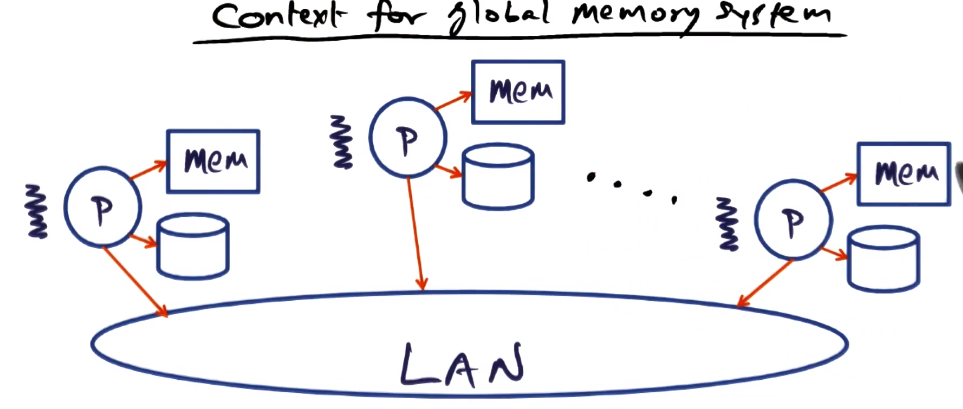
- Memory pressure
- Different for each node
- How best can we use idle cluster memory?
- Remote memory access may soon be faster than local disk accesses
- 10 gigabit links will soon be common for LANs. This is faster than local disk access speeds (especially given spinning rust technology if relevant)
- Memory manager
- VA->PA or read from disk
- gives the illusion that all of virtual address space is in physical memory (covered thoroughly in GIOS notes)
- Global memory system
- VA-> or cluster memory or read from disk
- Generally, GMS favors networked acess to cluster memory over reading from local disk.
- Only pull from local disk if required page is not in cluster memory
- Does not interfere with writing to local disk, though. Disk always has local copies of all pages. Only pages that are in cluster memory are paged out pages that are clean (not “dirty”).
- GMS does not add any new causes for worrying abot failures, as a node crash will only lose clean pages, replicated in local disk
GSM Basics
- “Cache” refers to physical memory (i.e. DRAM) not processor cache
- Sense of “community” to handle page faults at a node
- Use peer memories as a supplement for the disk
- Physical memory of a node
- 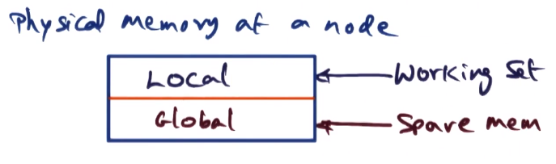
- Global component is where community service storage is kept
- Boundary/size between local and global memory shifts depending on memory pressure on the node. As working set grows, global memory shrinks and vice versa.
- Shared pages will be in the local component of node memory for multiple nodes. So pages in local memory may be private or shared.
- Paradoxically, though, pages in the global part of a node’s memory are guaranteed to be private copes, as the global section is equivalent to a disk.
- 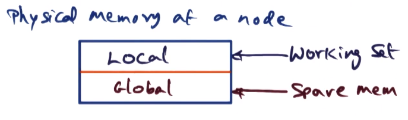
- The function of GSM is to serve as a remote paging facility
- Coherence of shared pages it outside the purview of GSM. Maintaining coherence is the concern of the application
- GSM, as do most pagers, uses a variant of the LRU page replacement algorithm
- As it is a global structure, it picks the globally oldest page to replace. This means age information needs to be managed by GSM
Handling Page Faults – Case 1
- 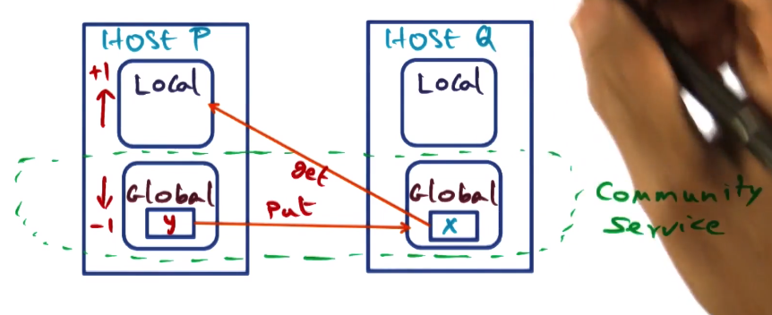
- Common Case
- Page fault for X on node P
- hit in global cache of some node q
Handling Page Faults – Case 2
- 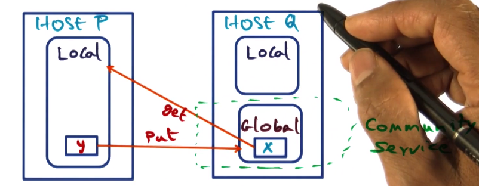
- Common case with memory pressurea t P
- page fualt for x on node p
- Swap LRU page y for X
Handling Page Faults – Case 3
- 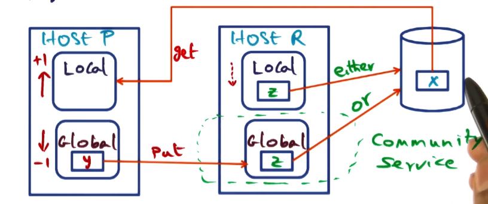
- Note that if the least recently used page on R is in global section it must be clean, so can be discarded without worrying about storing. If it is in local, it could be dirty so must be stored to disk.
- Faulting page on disk
- page fault for x on node p
- page not in cluster
Handling Page Faults – Case 4
- 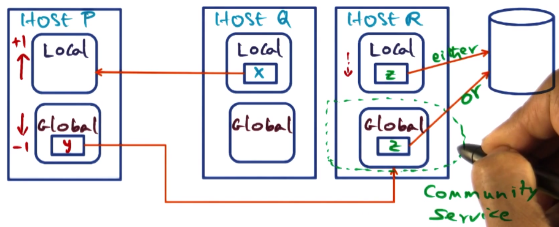
- Page x is copied to p’s local section but not removed from q’s local section
- Faulting page actively shared
- Page fault for x on node p
- page in some peer node q’s local cache
Summary Quiz
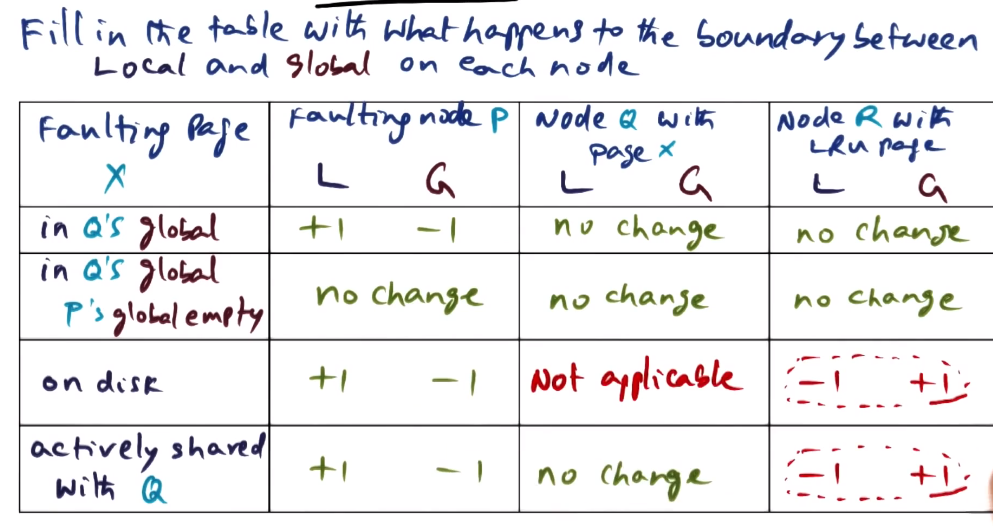
Geriatrics (Age Management)
- 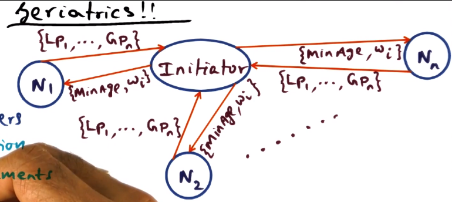
- How can we identify the globally oldest page for our LRU page replacmenet variant?
- Epoch parameters
- T: Max duration
- M: Max replacements
- At the start of each epoch
- Every node will send age info to initiator
- What is the age of the pages resident at this node.
- Initiator node will compute and respond with:
- Identify M oldest pages in cluster, that need to be replaced
- Out of those M pages, what is the minimum age (the “youngest” page that must be replaced)
- Expressed as MinAge
- What fraction of pages that belong to each node will be replaced (called here a weight)
- Express as Wi
- Every node will send age info to initiator
- Selection of an initator should be dynamic. Any one node should not be stuck with this work every time, especially if it gets busy.
- Initiator for next epoch will be the node with highest replacement weight (Wi). This is easy because each node receives the weights of all nodes from the initiator each epoch.
- Action at a node on page fault
- Page y eviction candidate
- if: age(page y) > MinAge => discard
- if: age(page y) < MinAge => send to peer Ni
- Ni identified using the Wi weights from most recent epoch. Decision algorithm slightly complicated, not given in detail.
- Age management only approximates global LRU, does not actually establish it definitively. This is a compromise for performance.
- Think global, act local. Hammered on throughout the course, mentioned again here.
Implementation of GSM in Unix
- 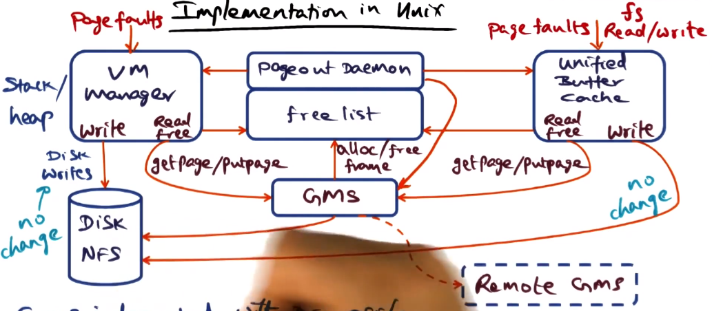
- GMS integrated with DEC OSF/1
- Access to anonymous pages and filesystem-mapped pages go through GMS on reads
- Collecting age information to calculate global LRU is the hard part, as described above
- In particlar within the VM manager the OS does not see what user applications are doing with their pages.
- The solution here was to add a daemon to dump information from the TLB periodically into a data structure the GMS maintains.
Distributed Data Structures
- Must convert VA to UID (universal ID)
- derived from VM and UBC
- 3 key data structures
- PFD
- page frame directory
- UID -> PFD -> PFN
- like a page table on a caching node
- states: local private/shared, global private, on disk
- GCD
- Global cache directory
- A cluster-wide hash table
- We want to distribute management of PFD lookups
- UID -> GCD -> Ni
- Ni is which node has the PFD for this UID
- This is dynamic
- POD
- Page Ownership Directory
- UID -> POD -> Ni
- Given a UID, which node has the GCD for it?
- Replicated on all nodes
- In short, use POD to find GCD, use GCD to find PFD, use PFD to find PFN
- 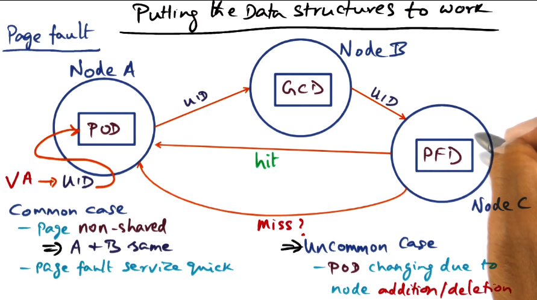
- in case of GCD moving to different node, POD must be updated
- 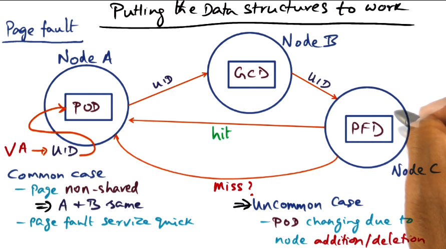
- PFD
- On page eviction
- paging daemon is invoked
- every node has a paging daemon
- invoked if freelist is below a specified threshold
- there’s always a freelist, system doesn’t run with zero free pages as a matter of course
- putpage oldest pages
- update GCD, PFD for the UIDs
- paging daemon is invoked
Distributed Shared Memory
- Can we make the cluster appear like a shared memory machine?
Distributed File Systems
- How can we use cluster memory for cooperative caching of files?